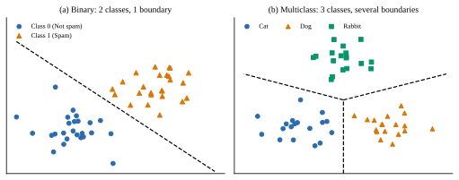
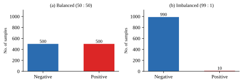

| Type | Meaning | Example |
|---|---|---|
| Binary | Exactly two classes; each sample belongs to one of them (positive / negative). | Spam vs not spam; pass vs fail; disease vs healthy. |
| Multiclass | More than two mutually exclusive classes; each sample gets exactly one label. | Digit recognition (0–9); classifying an animal as cat, dog or rabbit. |
| Multi-label | Each sample can carry several labels at once. | A movie tagged both "action" and "comedy". |
| Imbalanced | Any of the above where one class has far more samples than another (see Q3). | Fraud (0.1%) vs genuine transactions (99.9%). |

| Basis | Binary Classification | Multiclass Classification |
|---|---|---|
| Number of classes | Exactly 2 | 3 or more (K > 2) |
| Output | 0 / 1, Yes / No, +1 / −1 | One label out of K, e.g. {cat, dog, rabbit} |
| Decision boundary | A single boundary (one hyperplane for a linear model) | Several boundaries dividing the space into K regions |
| Output function | Sigmoid: $P(y=1\mid x)=\frac{1}{1+e^{-z}}$ | Softmax: $P(y=k\mid x)=\frac{e^{z_k}}{\sum_j e^{z_j}}$ |
| Loss function | Binary cross-entropy | Categorical cross-entropy |
| Algorithms | Logistic regression, SVM, perceptron work directly | Native: KNN, decision tree, Naïve Bayes, softmax; binary models need OvA / OvO (Q7) |
| Confusion matrix | 2 × 2 (TP, FP, FN, TN) | K × K; TP, FP, FN computed per class |
| Evaluation | Accuracy, precision, recall, F1, ROC-AUC | Accuracy, per-class precision / recall, macro / micro / weighted averages |
| Complexity | Simpler and faster | More complex; more parameters and more confusable classes |
| Examples | Spam detection, fraud detection, pass / fail | Digit recognition, news topic, species, sentiment (positive / neutral / negative) |

| Basis | Balanced | Imbalanced |
|---|---|---|
| Class distribution | Classes approximately equal (≈ 50 : 50) | Highly unequal (90 : 10, 99 : 1 or worse) |
| Learning behaviour | Model learns all classes fairly | Model is biased towards the majority class and may ignore the minority |
| Accuracy | A reliable measure | Misleading: always predicting the majority class gives high accuracy |
| Suitable metrics | Accuracy, F1 | Precision, recall, F1, ROC-AUC, PR-AUC, balanced accuracy |
| Special handling | Not needed | Resampling, class weights, threshold tuning, anomaly detection |
| Data splitting | Simple random split works | Stratified split needed so each fold keeps the minority class |
| Examples | Cat vs dog images, handwritten digits | Fraud, rare disease, intrusion detection, defect detection, spam |
A fraud dataset has 990 genuine and 10 fraud transactions. A useless model that predicts "genuine" for everything gets
The 99% accuracy hides the fact that the model catches no fraud at all. This is why recall, precision and F1 must be used for imbalanced problems.
class_weight='balanced').